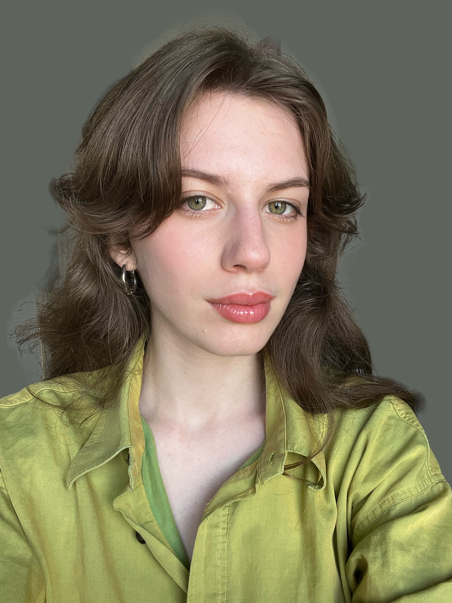

Panna Drenkó (Panna Drenko) is a visual artist and graphic designer working across installation, print, animation, and digital media, exploring how meaning emerges through symbols, gestures, and atmosphere. Her practice draws on folk stories, public signage, publishing, and natural forms, with a focus on transformation and care. She is completing her BA in Graphic Design at the Royal Academy of Art, The Hague (2026), and her projects create systems that foster design and connection.
Instagram: @pannathepan
Email: drenkopanna@gmail.com